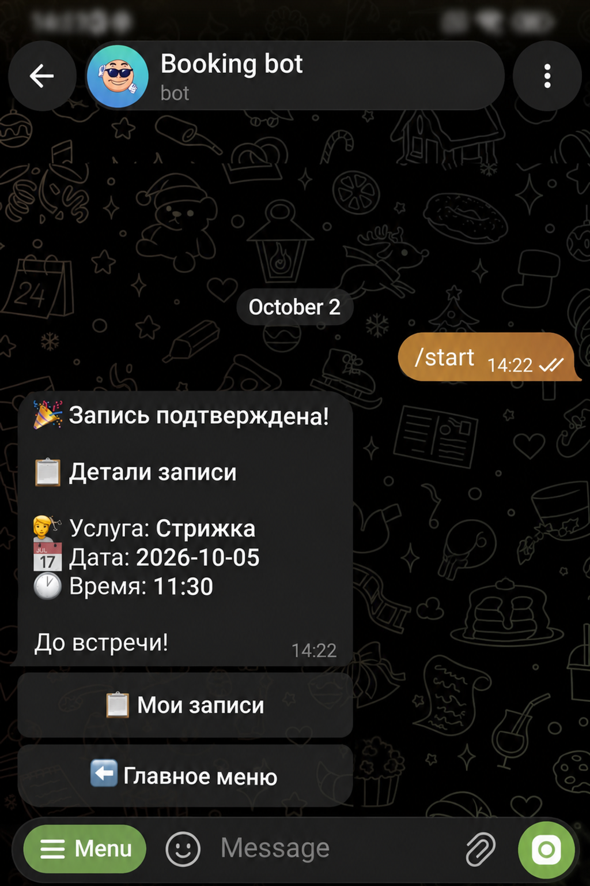
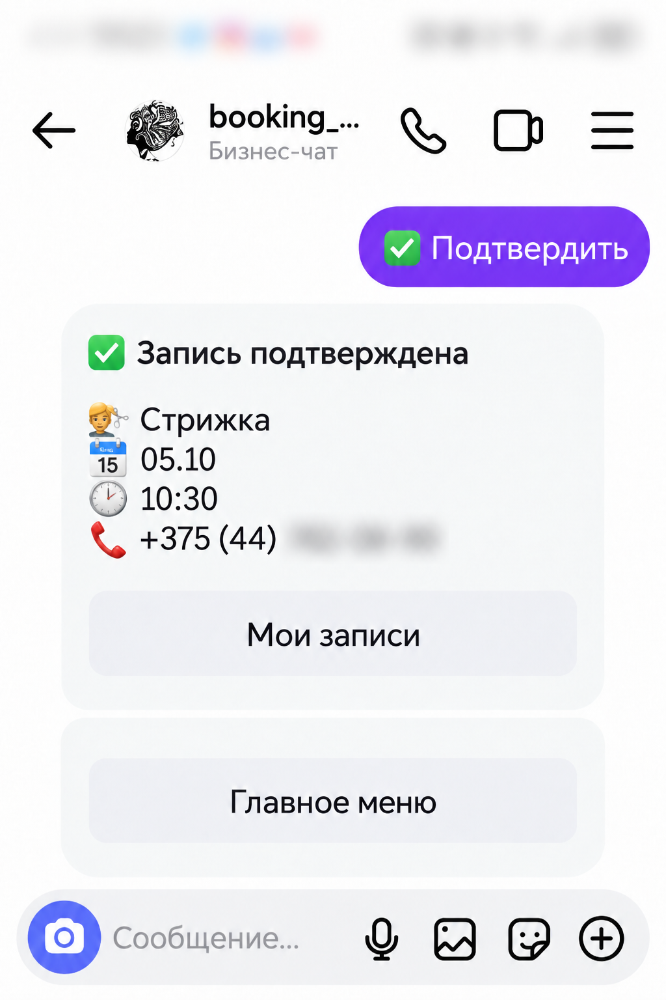
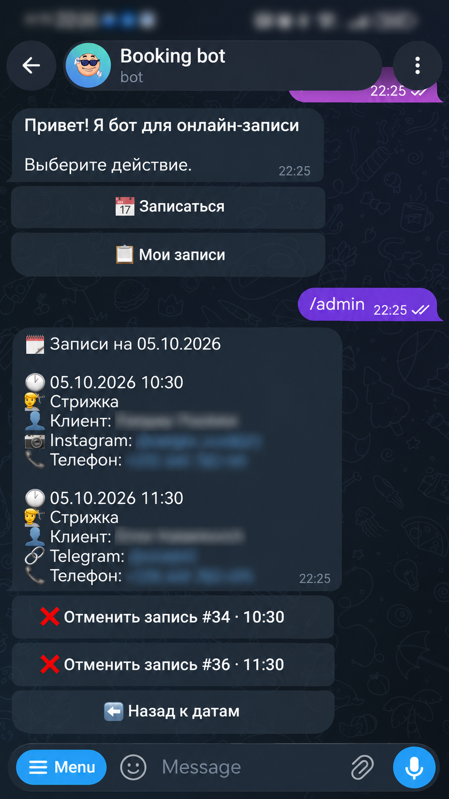
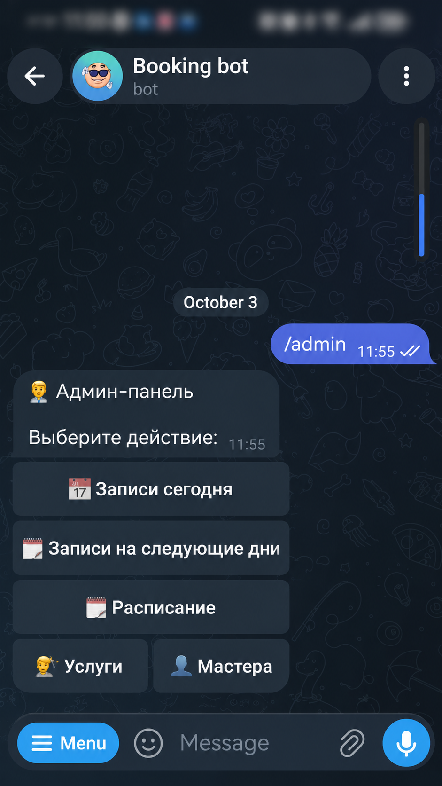

Там, где уже ваши клиенты
BookingBot подключается к вашему бизнес-каналу в Telegram или Instagram Direct. Клиенту не нужно отдельное приложение.
Автоматизирует запись клиентов через Telegram и Instagram — без лишней переписки, накладок в расписании и ручного контроля.


Клиент сам выбирает услугу, дату и свободное время, затем получает подтверждение. Вам не нужно согласовывать каждый визит вручную.
BookingBot подключается к вашему бизнес-каналу в Telegram или Instagram Direct. Клиенту не нужно отдельное приложение.
Услуга, дата, время и подтверждение — всё прямо в привычном канале общения.
Клиент проходит запись самостоятельно. Вам остаётся следить за рабочим днём в одном меню.
Клиенты записываются через Telegram и Instagram Direct, а вы видите все записи вместе. Занятое время больше не доступно ни в одном из каналов.
Задавайте рабочие часы, выходные и перерывы. Меняйте график на конкретную дату, когда планы меняются.

Откройте Telegram — записи, график и услуги уже под рукой.

Подтверждение с деталями записи и напоминание перед визитом. Если мастер отменит запись, клиент получит уведомление в своём канале и сможет записаться снова.
Уведомления в Telegram о новых записях и отменах клиентами — из обоих каналов. Вы узнаете, когда в расписании появляются изменения.
BookingBot повторно проверяет доступность времени перед подтверждением. Даже если несколько клиентов записываются одновременно, расписание защищено от накладок.
Уведомления приходят в тот канал, где клиент записался. Клиенты Telegram и Instagram учитываются отдельно.
Клиент пишет «Записаться» и открывает меню BookingBot. Кнопка «Записаться» в меню ведёт к выбору услуги, даты и времени.
Услуга Дата Время Телефон Подтверждение
Выбор услуги, времени и подтверждение.
Та же запись — в Instagram Direct.
Нажмите на скриншот, чтобы рассмотреть детали.
Откройте бота и пройдите путь своего клиента: от главного меню до подтверждения записи.